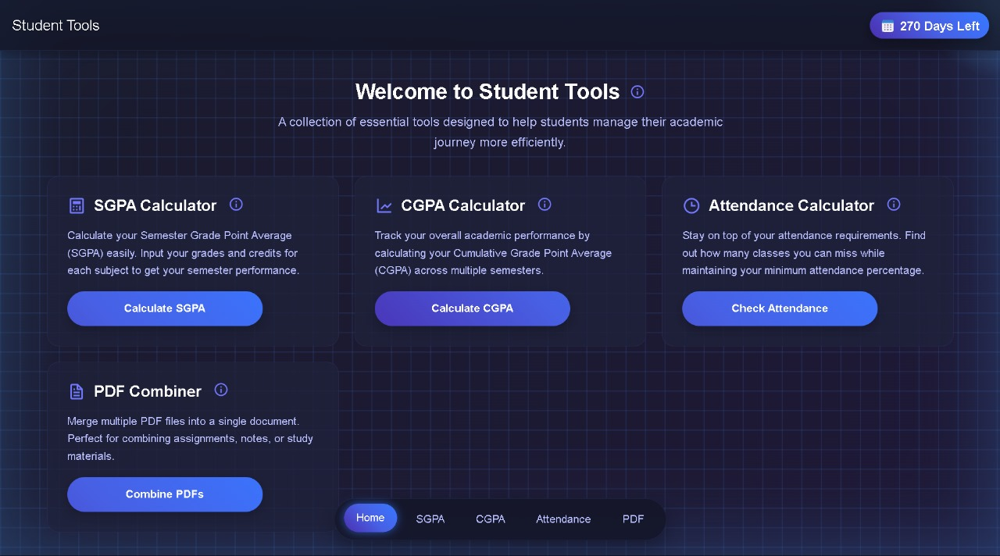

Research Paper on Generative AI

Technologies: Machine Learning, AI
Description: Currently working on a Research Paper on a Generative AI model that creates a 3D model of the heart based off of the given 2D input MRI scans. We are planing of using pre-trained models on the same thing but also modify it in such a way that it'll improve the overall accuracy by filling out the missing parts with the training data.
E-Learning Platform

Technologies: Java, Spring Boot, React, PostgreSQL
Description: Developed a comprehensive e-learning platform using MVC architecture that enables educational institutions to create, manage, and deliver online courses. Built with Java (OOP principles), Spring Boot for backend, React for frontend, and PostgreSQL for database, providing features like course management, student tracking, and interactive content delivery.
National Disaster Management

Technologies: HTML, JavaScript, Python, MySQL
Description: Developed a dynamic website that facilitates NGOs to get help for Disasters within the country where users and volunteers can check and access the disasters where as the volunteers can apply for volunteering at the disasters and the admin can add disasters and training sessions. Demonstrated proficiency in database systems (MySQL) for storing volunteer, disasters, admin, training session and user records and enabling efficient search functionalities within the website.
Background Music Generation

Technologies: Python, Deep Learning, NLP, Audio Processing
Description: Developed an AI system that generates customized background music for videos by analyzing their content. The system extracts video transcripts, converts them to music generation prompts, and creates tailored background music that matches the video's context and emotional tone.
Ultimate Tic-Tac-Toe

Technologies: Python, Reinforcement Learning, Neural Networks, Q-Learning
Description: Created an AI-powered Tic-Tac-Toe game with three difficulty levels: Easy (random algorithm), Medium (Q-table learning), and Hard (deep Q-learning with neural networks). The system can train by playing against itself or learning from games against human players.
StudentTools Website

Technologies: HTML, JavaScript, Python, MySQL
Description: Developed a dynamic website with an Attendance Calculator and a robust search engine, facilitating automated tracking and quick information retrieval. Utilized front-end technologies (HTML, CSS, JavaScript) and MySQL for storing attendance records and enabling efficient search functionalities.
Event Management Platform

Technologies: HTML, JavaScript, PHP, MySQL
Description: Developed a comprehensive web platform for managing college events, both upcoming and ongoing. The system provides centralized solutions for event organizers, participants, and administrators with features like event registration, attendance tracking, and interactive calendar interfaces.
Multi-Client Chat Server

Technologies: Python, Socket Programming, Threading
Description: Implemented a robust chat server that supports multiple clients with features like file sharing, private messaging, and admin controls (kick/ban). Includes comprehensive logging of system events and chat history while maintaining efficient network communication.
Collision Detection Device

Technologies: Arduino, Ultrasonic Sensors, C++
Description: Designed and built a device that detects proximity to objects using ultrasonic sensors and provides real-time audio-visual alerts to help prevent collisions. Created a functioning prototype with practical applications for safety systems and automated vehicles.